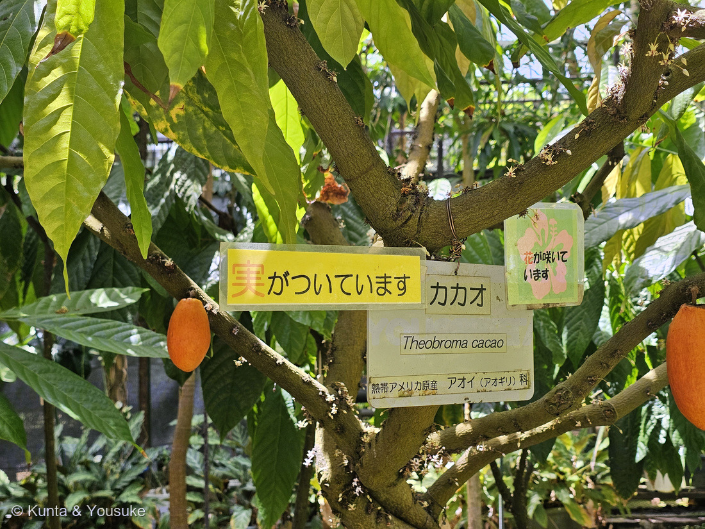
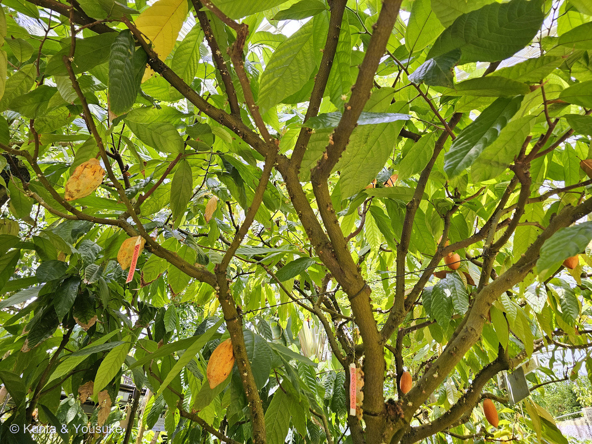
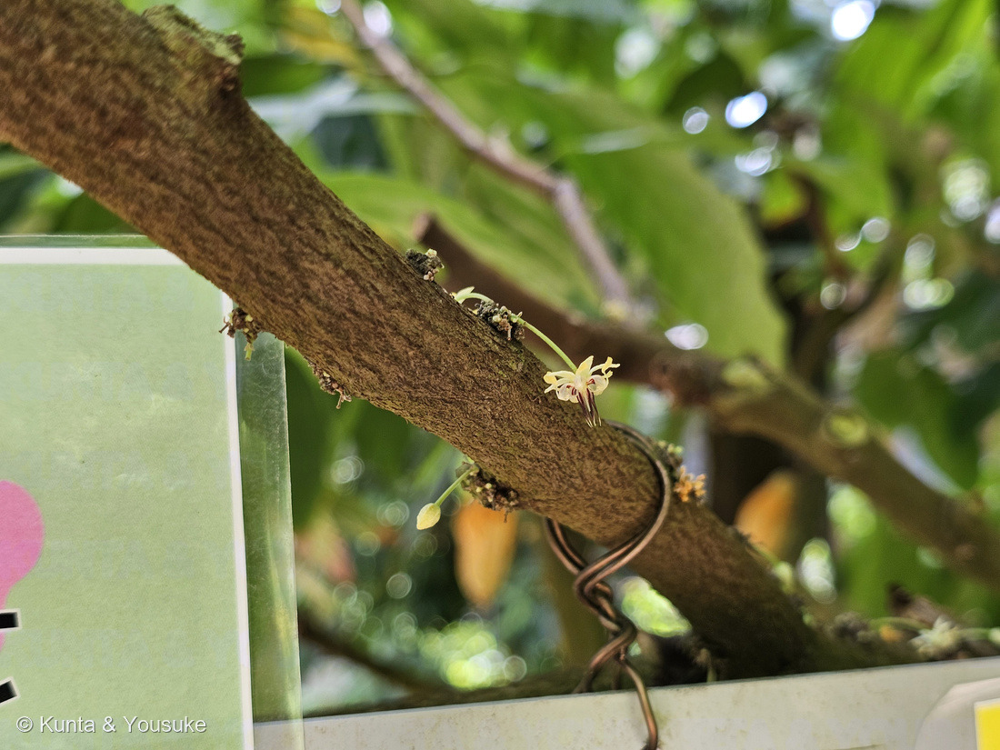
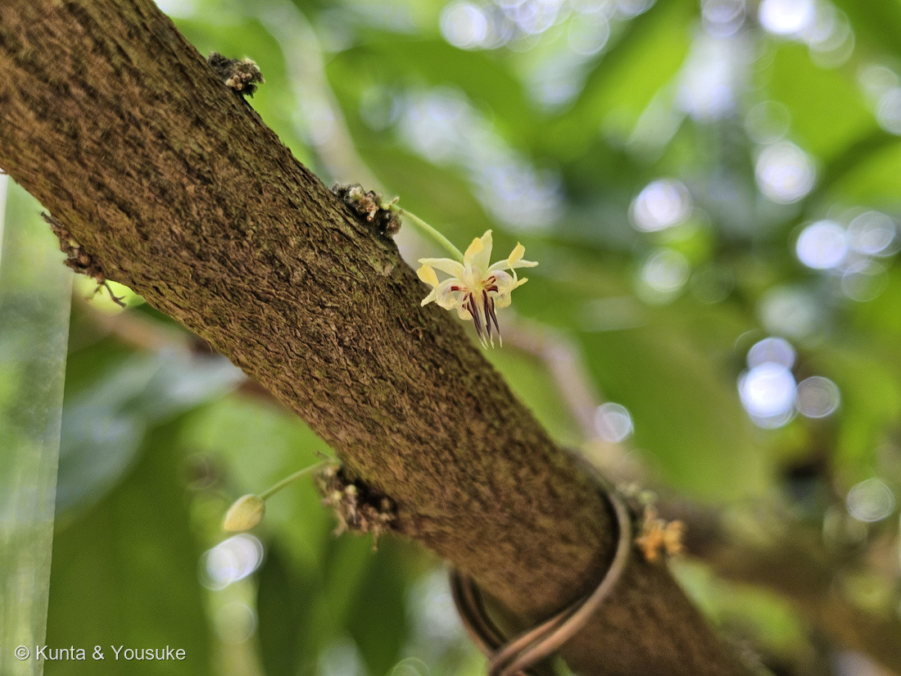
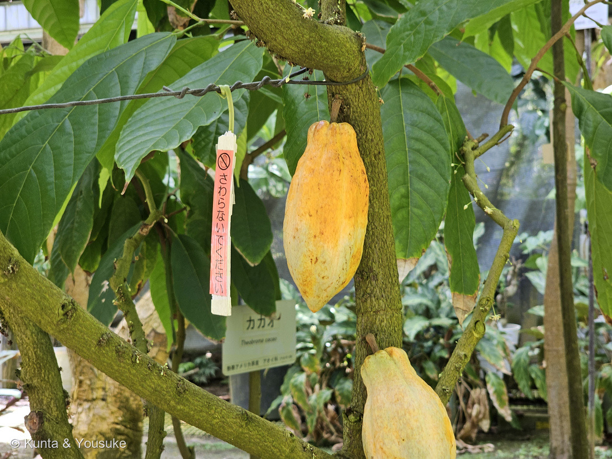

地図を読み込んでいるよ…
🔍 写真も地図も、押しているあいだ拡大して見られるよ（スマホは指を置いてすこし待ってね）。
🌍 の地図＝この子がもともと自生している場所を緑に。中南米（アマゾン〜中米）の熱帯雨林。
⭐アマゾンの熱帯雨林の木。チョコレートは、この地図の中から来たんだよ。
⚠ 地図は国（日本と中国だけ県・省）までしか塗れないから、ほんとうの分布より広く見えていることがあるよ。地図はだいたいの場所。正確なところは、上の文を見てね。
カカオ（加加阿）
Theobroma cacao L.
別名 · ココアノキ／チョコレートの木 ／ 旧アオギリ科
アオイ科 · Malvaceae（カカオ属）── 003 スイレンボク・038 フヨウと同じ科
燻太さんの言葉「幹にでっかいラグビーボール？ 焙煎して砕くだけでもいい香り。でも食べすぎ注意。神の食べ物」……ヒントが、ぜんぶ当たり
名前と学名の由来 ── 「神の食べ物」二人目
- ⭐Theobroma（テオブロマ）＝ギリシャ語で「神（theos）の食べ物（broma）」。リンネが名づけた。cacao は、アステカのナワトル語 cacahuatl から。
- ⭐064 カキ（Diospyros＝「神の穀物・神の食べ物」）に続いて、“神の食べ物”二人目。→ 燻太さんの「神の食べ物って言われる植物、意外と多いのかな？」の答え＝うん、意外といる（一言メモに続く）。
- アオイ科（旧アオギリ科）＝003 スイレンボク・038 フヨウと同じ科。仲間にワタ・オクラ・ドリアン・コーラ（コーラ飲料）も。
- 熱帯雨林の木で、高い気温と湿度が要る＝日本では植物園の温室でしか会えない（この写真も温室。窓と緑のロープが写ってる）。
⭐⭐⭐ 燻太さんの「幹にラグビーボール」＝幹生果（cauliflory）
- ⭐カカオは、花も実も、枝先ではなく「幹や太い古枝から直接」出る＝幹生花・幹生果（cauliflory）。
- クリーム色の、径1〜2cmの小さな花が、幹に房状にびっしり（写真②で、幹の樹皮に直接ついた小花が見える）→ 受粉すると、ラグビーボール状の大きなポッド（15〜30cm）が幹からぶら下がる（＝燻太さんの「でっかいラグビーボール」！）。緑→黄→橙→赤紫と、品種で色さまざま。⚠このページを作ったときは「白い径3cmほどの花」と書いていた——⭐2026年に近くで撮った写真と出典で直したよ（下の追記を見てね）。
- ⭐なぜ幹に？——うっそうとした熱帯林の中で、幹を歩きまわる小さな送粉者に合わせ、また重い実を、丈夫な古い幹で支えるため、と考えられる。
- ⭐花粉を運ぶのは、ハチではなく、体長1〜2mmの小さな「ヌカカ（糠蚊）」の仲間とされる＝小さな花に、小さな虫。だから受粉率が低く、実際にポッドになるのはごく一部。
⭐ チョコレートになるまで（燻太さんの「焙煎して砕く」）
- ポッドの中には、白いパルプ（果肉）に包まれた種子＝カカオ豆が20〜60粒（英語版Wikipedia「20 to 60 seeds」／植木ペディア「一つの果実に20〜60個ほど」）。種子は脂肪ぶんが40〜50%（＝カカオバター）。⚠ここも「30〜40粒」と書いていたのを直したよ。
- ⭐豆をパルプごと1週間ほど「発酵」（ここで、チョコの香りのもとが生まれる）→ 乾燥 → 焙煎して砕く（カカオニブ） → すりつぶす（カカオマス）。⭐燻太さんの「焙煎して砕いただけでも、いい香りと豊かな風味」は、まさにこのカカオニブ。
- ⚠苦味・風味の主役は テオブロミン（カフェインの仲間のアルカロイド）＋カフェイン。⭐「食べすぎ注意」も正しい：⚠テオブロミンは、犬・猫には毒（代謝できず中毒＝チョコを絶対に与えない）。人も大量は避ける。
昔からの暮らし
- ⭐古代マヤ・アステカでは、カカオは神聖な飲み物（ショコラトル）であり、通貨でもあった。⭐紀元前1100年代の壺のかけらから、すでにテオブロミンとカフェインが検出されている＝3000年以上の付き合い。
- 「神の食べ物」の名も、この“神聖なごちそう”という歴史から。
⭐⭐⭐【2026.08.08 追記】7年ぶりに会いに行ったら、花も実もついていた
⭐ 上の写真①②は2019年9月30日。——そして写真③〜⑦は、2026年8月8日、広島市植物公園（広島市）の大温室。⭐⭐7年ぶりの再会だよ。
⭐⭐ この日、園はカカオの木に2枚の札を出していた。——黄色い「実がついています」と、ピンクの花の絵の「（小さい）花が咲いています」。⭐⭐⭐両方が同時に出ていた＝ひとつの木に、花と実が、いっしょにあるということ（写真③④）。
⚠ 園の解説板の写真は公開していない（200で決めたルールどおり、出典として引くだけにしてある）。
⭐⭐ そして、燻太さんが近くで撮ってくれたおかげで、このページの数字を2つ直すことになった。——いちばん下に書いておくね。
⭐⭐⭐ 燻太さんの「パーツが多い花だね」── 1つの花に、21のパーツ


⭐ 枝から直接、細い柄でぶら下がる花。ボタンで切りかえてね——片方はつぼみもいっしょに、もう片方は花のつくりがよく見えるよ（番号は上のギャラリーからのつづき）。
⭐⭐⭐ 燻太さんの「なんだかパーツが多い花だね」、そのとおりだった。——数えるとこう。
- 萼 5枚（うすいピンク）
- 花弁 5枚
- 雄しべ 5本
- 仮雄しべ 5本（花粉を作らない、飾りの雄しべ）
- 雌しべ 1本
⭐ 合わせて21。英語版Wikipediaは、この花のつくりを花式で「✶ K5 C5 A(5°+5²) G(5)」と書いている＝萼5・花弁5・「仮雄しべ5＋雄しべ5（葯は各2）」・雌しべは5心皮。⭐5がずらりと並ぶ花なんだ。
⭐⭐ そして、花弁の形がとても変わっている。——根もとが器のようにくぼんで袋（フード）になり、その先から細い舌のような部分がのびる。⭐写真⑥で、外に広がるクリーム色のさじ形が「舌」、そのすぐ内側の白っぽいお椀が「袋」だよ。
⭐⭐⭐ ここからが本番。
- ⭐⭐雄しべは短くて、その「袋」の中に隠れている。——OKINAWA CACAO は「雄蕊も花びらに完全に覆われています」と書いている。⭐外からは見えない。
- ⭐⭐⭐まん中から下へのびる、濃い赤紫の針5本が仮雄しべ。——これが雌しべを取り囲んで、柵になっている。同「めしべは仮雄蕊に完全にガードされています」。⭐写真⑥で、いちばん目立つあの赤紫が、それ。
⭐⭐⭐ つまりこの花は、鍵のかかった小さな部屋なんだ。——袋の中の花粉を取り出して、柵の中の柱頭までとどけられるのは、体長1〜2mmのヌカカ（Forcipomyia）だけ。⭐大きな虫は入れないし、風では運べない。
⭐⭐ だから「パーツが多い」は、そのまま「仕掛けが多い」ということだった。——⭐自分の花粉で受粉してしまわないように、そして決まった相手だけを通すように、これだけの部品が要る。
⭐⭐⭐ 燻太さんの「小さい花が、ここまで大きくなれるのは不思議」── ほとんどは、なれない

⑦ 黄色く熟してきた実と、「さわらないでください」の札。⭐写真③のオレンジの実とは色がちがう——園の解説板は「果実の色は樹によって個体差があり」と書いていたよ（番号は上のギャラリーからのつづき）。
⭐ まず、大きさをくらべてみよう。
- 花＝直径 1〜2cm（英語版Wikipedia「small, 1–2 cm diameter, with pink calyx」／OKINAWA CACAO「サイズは1〜2cm程度」）
- 実＝長さ 15〜30cm・幅 8〜10cm（英語版Wikipedia）
⭐ 長さで15倍以上。——たしかに、不思議になるよね。
⭐⭐⭐ その答えらしきものが、英語版Wikipediaの一文にあった。
「A mature tree may have 6,000 flowers in a year, yet only about 20 pods.（おとなの木は1年に6,000の花をつけるけれど、実になるのは20ほど）」
⭐⭐ 330の花に、1つ。⚠この割合は出典で大きく割れている——植木ペディアは「結実するのは全体の10％ほど」、OKINAWA CACAO は「カカオの受粉率はわずか1％程度」、英語版Wikipediaの数字は0.3%ほど。⭐でも「ほとんどが実にならない」という点では、3つとも一致している。
⭐⭐⭐ だから、燻太さんの「不思議だね」への、ぼくの答えはこう。——小さな花が大きくなるのが不思議なんじゃなくて、⭐⭐大きくなれた、ごくわずかな花だけが、あそこにぶら下がっているんだ。
⭐ 写真③④をもう一度見てほしい。——花は枝じゅうにいくつも咲いているのに、実は数えるほどしかない。⭐⭐あの数の差が、そのまま答えだよ。⭐そして、そのわずかな受粉をしているのが、1〜2mmのヌカカ。
⭐⭐ 幹のこぶ ── 同じ場所から、何年も咲きつづける
⭐ 写真⑤⑥の枝を、よく見てほしいんだ。——茶色いいぼのようなこぶが、樹皮のあちこちに点々とついている。⭐⭐そして、花はそのこぶから出ている。
Wibaux らの2025年の論文〔Annals of Botany 136巻2号 309〜323ページ〕は、これを「flower cushion（花のクッション）」と呼んでいる。
「clusters of compressed cymes that ultimately give rise to the characteristic swelling called a 'flower cushion'（つまった集散花序のかたまりが、やがて『花のクッション』と呼ばれる、あの特有のふくらみになる）」
⭐⭐⭐ しくみがおもしろい。——「new buds develop at the base of dehiscent flowers, facilitating repeated flowering at the same floral site（散った花の根もとに新しい芽ができて、同じ場所で繰り返し咲けるようになる）」。⭐しかも「buds can remain suppressed ... This delay can extend to several years（芽は眠ったまま待つことがあり、その待ち時間は何年にもなりうる）」。
⭐⭐⭐ だから、幹と枝がこぶだらけになるんだ。——あのこぶは傷でも病気でもなくて、何度も花を咲かせてきた場所の記録。⭐咲いて、散って、また同じところから咲く。それを何年も。
⏳ ⚠ひとつ、ぼくには分からないことがある。——2019年の写真②のこぶと、2026年の写真⑤⑥のこぶ。⚠同じ木なのかどうか、ぼくには決められない（2019年の写真は「植物園の温室」としか記録していないんだ）。⭐燻太さん、あの7年前の写真も、広島市植物公園だったか覚えてる？⭐⭐もし同じ木なら、同じこぶが7年かけて咲きつづけてきた、ということになるよ。
⚠ 正直に ── このページの数字を2つ直しました
⭐ 燻太さんが近くで撮ってくれた写真をきっかけに、出典に当たり直したら、前に書いた数字が2つちがっていた。——消さずに、直したことを書いておくね（073でパピルスと誤答したときと同じやり方だよ）。
- ⚠①花の大きさと色 ── 「白い径3cmほどの花」と書いていた。⭐正しくは、直径1〜2cmで、色はまっ白ではなくクリーム色、萼がうすいピンク（英語版Wikipedia「small, 1–2 cm diameter, with pink calyx」／植木ペディア「クリーム色をした５枚の花弁」／OKINAWA CACAO「サイズは1〜2cm程度」）。⭐写真⑤⑥のとおりだね。
- ⚠②種子の数 ── 「カカオ豆が30〜40粒」と書いていた。⭐正しくは20〜60粒（英語版Wikipedia「20 to 60 seeds」／植木ペディア「一つの果実に20〜60個ほど」）。
⭐⭐ 近くで撮った1枚が、7年前のページを直してくれた。——⭐ありがとう、燻太さん。
参考：Wikipedia (English)・Theobroma cacao（The flowers are small, 1–2 cm diameter, with pink calyx／The flowers are produced in clusters directly on the trunk and older branches; this is known as cauliflory／✶ K5 C5 A(5°+5²) G(5)／Cacao flowers are pollinated by tiny flies, Forcipomyia biting midges／A mature tree may have 6,000 flowers in a year, yet only about 20 pods／The fruit, called a cacao pod, is ovoid, 15–30 cm long and 8–10 cm wide／The pod contains 20 to 60 seeds／Theobroma is derived from the Greek for "food of the gods"）／Wibaux T, Lauri P-É, M'Bo Kacou AA, Kouakou OP, Vezy R (2025) A spatial perspective on flowering in cauliflorous cacao: architecture defines flower cushion location, not its early activity. Annals of Botany 136(2): 309-323（clusters of compressed cymes that ultimately give rise to the characteristic swelling called a "flower cushion"／new buds develop at the base of dehiscent flowers, facilitating repeated flowering at the same floral site／buds can remain suppressed, maintaining minimal growth until conditions are favourable for a primary inflorescence to emerge. This delay can extend to several years）／庭木図鑑 植木ペディア・カカオ（４ｍ〜１０ｍの小高木／葉は長さ１８〜４５センチほどの楕円形／クリーム色をした５枚の花弁／幹や枝から直接生じ、作り物のように見える／条件が整えば一年中開花し、特定の開花時期はない／長さ１５〜３０センチほどの大きな楕円形／緑色で、熟すに従って黄色、オレンジ、赤、紫色に変わっていく／一つの果実に２０〜６０個ほどが入る／結実するのは全体の１０％ほどとされる）／OKINAWA CACAO「解剖！カカオの花」（カカオの花は、雌蕊を中心に、仮雄蕊、雄蕊、花びら、がくで構成されています／めしべは仮雄蕊に完全にガードされています／雄蕊も花びらに完全に覆われています／サイズは1〜2cm程度／カカオの受粉率はわずか１％程度）／⭐広島市植物公園の解説板「カカオ」と、園の名札・「実がついています」「花が咲いています」の札（⚠掲示物なので写真は公開せず、出典として引くだけにしてある）